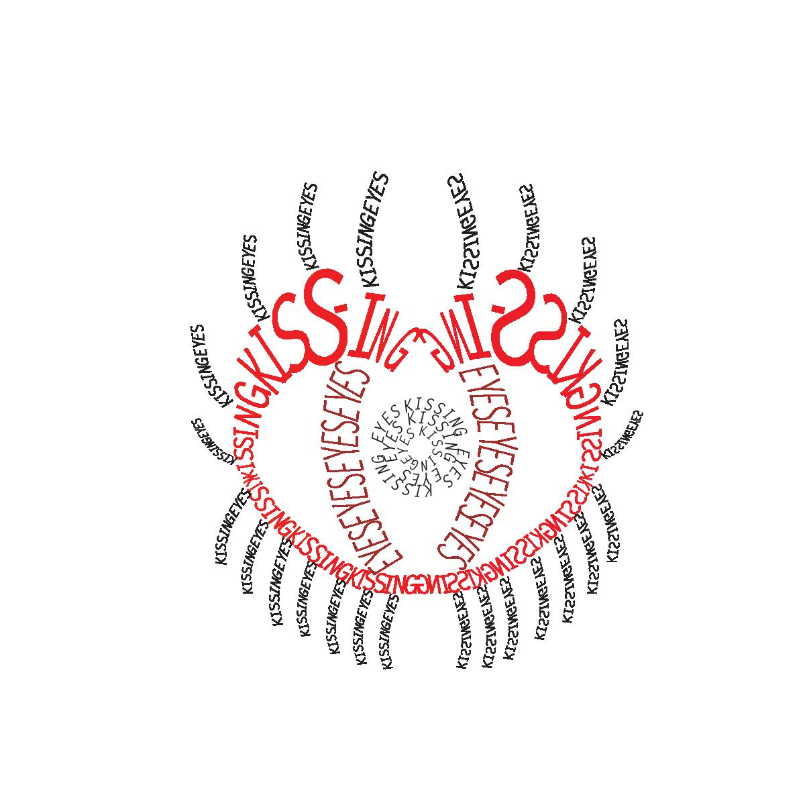

Below you will see a few of the pieces I have created using various programs such as Adobe Illustrator, Photoshop, and Affinity Designer.
For this piece, I chose two words to create out of. The two words in this piece are "Love" and "Birds", the birds created
out of the word "bird", and the heart out of "love".
Like the piece above, this piece created using two words for one piece. The two words used here were "Kissing" and "Eyes."

Once of my favorites, I've created this piece using only the pen tool for the shapes, aside from the text itself. The Gameboy Color
was my first console, and it wasn't long after playing that I knew
I wanted to pursue game design as my career.
This piece was created after the tragic events of George Floyd, which incited protests to tell the world that we are all equal and deserve
the chance to live with equality amongst one another.
A variant of the piece before, using a pattern similar to the Betsy Ross flag.